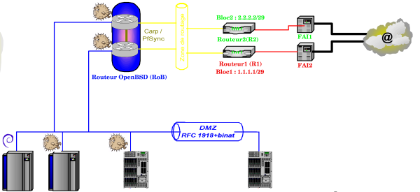

Agregation de lignes ADSL
Sommaire
Objectifs
Disposer d' une connexion Internet fiable (comme du RNIS ou du SDSL), à haut-débit (comme de l'ADSL), permanente (xDSL,Fibre,câble,...) , pas trop chère (ADSL),...
| Solution | Avantages | Inconvénients |
| RTC |
|
|
| RNIS/Numéris |
|
|
| ADSL |
|
|
| SDSL |
|
|
| Liaison louée |
|
|
| Satellite |
|
|
| En attendant la fibre optique |
|
|
Bref aucune solution ne semble répondre simultanément à tous les aspects.. On va se la fabriquer nous-même cette solution.
On achète n lignes ADSL à bas prix et on rend tout ça le plus transparent possible pour donner l'impression d'avoir une TRES grosse ligne (augmentation de débit) ET une ligne super-fiable (tolérance de pannes).
Il va falloir avoir la main sur les équipements suivants :
- Serveurs DNS (2 en théorie, 1 seul en fait grâce à une astuce)
- Serveurs en DMZ
- modem-routeurs des FAI (non-indispensable, mais pratique)
Remarque Cristollienne
Pour les collègues de l'académie de Créteil, le rectorat nous a concocté une liste d'offres ADSL avec GTR (Garantie de Temps de rétablissement) de 4h, un bloc de 8 IP publiques, un modem-routeur préconfiguré, une offre incluant même une ligne de secours,le tout à un tarif assez raisonnable.
C'est parfait....sauf que :
- GTR 4h : Impeccable, mais suppose que le bahut peut se retrouver une demi-journée sans Internet...
- Ligne de secours : Super, sauf que on paye (assez cher) une ligne bas débit (512kb) qui ne servira jamais... De plus cette ligne doit être utilisée par le routeur VPN Amon lors de la panne de la ligne principale......Opération qui ne fonctionne pas , à l'heure actuelle... En cas de panne principale, le tunnel VPN ne se remonte pas sur la ligne de secours. J'ai bien peur d'être dans le même cas.. Mais comme le rectorat a validé la solution chez le FAI, pas de souci chez nous; ça ne fonctionne pas mieux.
- 18M : maximum...en pratique, je constate actuellement plutôt 4 méga. PAs mal, mais si on peut avoir un équivalent 8M (1) , pourquoi se priver?
(1) :La solution proposée ici ne vous permettra pas d'augmenter le débit individuel, mais plutôt se répartir les n postes sur plusieurs lignes. Mais votre serveur ftp à 100ko n'ira pas plus vite!
Remerciements
Un grand merci aux collègues de l'ex-cellule informatique de l'ex-Matice du rectorat de Créteil, plus communément appelée bocal pour avoir participé aux discussions autour de ce projet -et autour d'une Grim, aussi ;-) .
Liste des courses à faire
- {2 boites de Soekris Boitier_Soekris } Pour la version sans SPOF [[1]]
- 2 abonnements FAI avec 8 IP, de la GTR, et un beau modem (de m..e car modèle grand public donc pas de SSL, SSH, SNMP...)
- 2 boites de DVD OpenBSD dernier parfum à l'heure (4.1 pour l'instant)
- Quelques câbles réseau pour connecter tout ça à vos baies ( 1 croisé pour la liaison Carp/Pfsync inter RoBs)
- Quelques litres de café (équitable) pour tenir, du temps devant vous et de la patience de vos collègues car, je ne vois pas comment monter une plateforme de test sur un truc pareil avant de monter en prod...
Situation
- 3 zones : Internet, DMZ, LAN
- 4 routeurs(dans un premier temps) : R1 et R2 les routeurs des lignes ADSL des FAI1 et2 : RoB le routeur OpenBSD qui nous intéresse, et enfin RLAN le routeur reliant la DMZ au LAN.
- DMZ: contient:
- un serveur web (http+https)
- un serveur de notes , l'excellent GEPI
- une terminaison VPN pour le réseau administratif (le machin Amon)
- Un routeur filtrant SLIS
- LAN : Clients définis avec 1 GW et 2 DNS
|---Routeur1(FAI1)--|
Internet--| |--RouteurOPenBSD---DMZ---RouteurLAN---LAN
|---Routeur2(FAI2)--|
- RoB a trois pattes :
- sis0 côté WAN
- sis1 qui sera réservée à la tolérance de panne sur ce routeur (lien dédié vers l'autre clone de RoB)
- sis2 côté DMZ
- RoB a trois pattes :
- n(=2 pour l'instant) FAI avec chacun son plan d'adressage
- FAI1 : bloc de 8 IP publiques : 1.1.1.1/29 GW: 1.1.1.6
- FAI2 : bloc de 8 IP publiques : 2.2.2.1/29 GW: 2.2.2.6
- n(=2 pour l'instant) FAI avec chacun son plan d'adressage
Vocabulaire
- FL : aspect relatif à la tolérance de pannes (failover)
- LB : aspect relatif à la répartition de charge (Load balancing)
- DB : aspect relatif à l'augmentation du débit
- UU,UD,... : l'état de chacune des lignes des FAI1 puis FAI2 :(Up ou Down) ce qui donne 4 cas : UU,UD,DU,DD
- Spécif:
- Traffic
- Internet -> DMZ
- résolution DNS
- LAN-> DMZ
- LAN-> Internet
- Internet -> DMZ
Gestion du DNS
- Quelques zones :
- Une zone publique avec des serveurs eux aussi publics, mais en adressage privé(!).
J'ai fait le choix de ne pas publier d'enregistrement de cette zone en RFC 1918 et de ne pas tenir compte des tables de routage des serveurs DMZ pour router les paquets entre eux. J'ai simplement ajouté une carte réseau côté LAN et je renvoie une adresse LAN aux clients LAN. Ce n'est pas une bonne méthode,mais tout ça a été fini un peu à l'arrache, dans l'urgence... (Attention de ne pas activer le routage entre les cartes)
- un LAN avec des serveurs privés inaccessibles depuis l'extérieur..
Cela impose d'utiliser la notion de vues (views) de Bind. En gros, selon l'endroit d'où vient la requête DNS, le serveur répond différemment.
- Fichier de configuration /var/named/etc/named-dual.conf ( je ne précise que les lignes importantes, ou qui ont changé)
acl clients {
localnets;
::1;
};
Je définis les clients comme étant ceux directement connectés au serveur.
view "recursive" {
match-clients { clients; };
match-recursive-only yes;
view "recursive" {
match-clients { clients; };
match-recursive-only yes;
zone "lyceenobel.org" {
type master;
file "master/LAN";
allow-transfer {Mon_SLIS; UN_autre_DNS_local;};
};
};
Tous les clients locaux seront servis par les informations contenues dans le fichier LAN, et il auront droit à la récursivité en prime. (le serveur fait l'ensemble des requêtes pour le client). J'autorise les deux machines Mon_SLIS et UN_autre_DNS_local à faire un transfert de zone.
view "authoritative" {
recursion no;
zone "lyceenobel.org" {
type master;
file "master/WAN";
allow-transfer {NS_GANDI;};
};
};
Tous les clients exterieurs seront servis par les informations contenues dans le fichier WAN, et il n'auront pas droit à la récursivité . J'autorise le serveur DNS de Gandi à faire un transfert de zone; ce qui est obligatoire pour un DNS secondaire.
- Enregistrements IN A :
Toutes les machines en DMZ ont un alias IP, ex:
Web: 1.1.1.4 et 2.2.2.4
Le serveur DNS (lui aussi avec alias IP et SOA chez le FAIx) contient l'enregistrement suivant:
web IN A 1.1.1.4 IN A 2.2.2.4
Comme ça chaque client du côté LAN comme côté WAN a, en fonction de sa réponse DNS, accès au serveur web sur l'une ou l'autre IP LB.
Au final, on a les deux fichiers suivants :
- LAN
;Zone lyceenobel.org à destination des clients du lycée
@ IN SOA feynman hostmaster.lyceenobel.org. (
2007101907 ; Serial
21600 ; Refresh
3600 ; Retry
3600000 ; Expire
3600 ) ; Minimum
IN NS feynman.lyceenobel.org.
IN NS ns6.gandi.net.
IN MX 10 feynman.lyceenobel.org.
feynman IN A I_PLAN
slis IN A I_PLAN
heisenberg IN A I_PLAN
isengard IN A I_PLAN
silicium IN A I_PLAN
curie IN A I_PLAN
www CNAME feynman
notes CNAME heisenberg
backup CNAME isengard
se3 CNAME silicium
AC_Secondaire CNAME curie
- WAN
;Zone lyceenobel.org à destination du vilain Internet
@ IN SOA feynman hostmaster.lyceenobel.org. (
2007101906 ; Serial
21600 ; Refresh
3600 ; Retry
3600000 ; Expire
3600 ) ; Minimum
IN NS feynman.lyceenobel.org.
IN NS feynman-bis.lyceenobel.org.
IN NS ns6.gandi.net.
IN MX 10 feynman.lyceenobel.org.
feynman IN A IP_FAI1
feynman-bis IN A IP_FAI2
slis IN A IP_FAI1
IN A IP_FAI2
heisenberg IN A IP_FAI1
IN A IP_FAI2
Attention, pour la suite, il y a un piège DNS dans lequel ne pas tomber :Mettre de multiples CNAME pour un seul enregistrement, ce qui est une violation des RFS 1034,1035. | En anglais :
Ca ça marche pas :
www CNAME feynman
CNAME feynman-bis
crl CNAME feynman
CNAME feynman-bis
notes CNAME heisenberg
Il faut faire ça, en fait :
www IN A IP_FAI1 www IN A IP_FAI2 notes IN A IP_FAI1 notes IN A IP_FAI2
Bon, rien de secret là-dedans, un dig nous dira tout; un serveur DNS c'est fait pour publier de l'info.
L'astuce est au niveau feynman/feynman-bis. Une recherche chez | zonecheck va passer sans souci car on aura virtuellement deux serveurs DNS sur des plans différents (RFC 1035), alors qu'en fait, ben...non, c'est le même ;-)
Il faut maintenant penser à jouer sur les TTL des zones DNS. TODO.
- Avantage :Si une ligne tombe, l'ensemble du traffic passe par la ligne restante FL.
- Problème :Si une ligne tombe, 50% des requetes DNS vont dans le mur:
Ligne UD Tous les clients recevant 2.2.2.4 pour le web vont se retrouver sans connection au serveur... Seuls ceux ayant recu 1.1.1.4 accèderont au serveur!
- Solution Modifier le fichier (named-dual.conf) contenant les enregistrements à chaque changement de la situation (UU, UD,DU,DD) pour retirer ou remettre les enregistrements qui vont bien. TODO .
Méthode : 2 fichiers à concaténer ou pas selon la situation, avec un test de ligne dans la crontab (ou mieux, une détection de l'état de l'interface du routeur). Mais comme les routeurs cristolliens n'ont pas SNMP d'activé, et qu'on a pas la main dessus, on l'a dans le baba ;-(
- Enregistrements MX
Même problème que les enregistrements IN A, mais, avec l'avantage de la possibilité de refaire une tentative de connexion ultérieure, en cas de souci. C'est asynchrone SMTP, cool.
Gestion des IP
Tout va se passer avec du binat.
Les serveurs en DMZ seront en adressage privé (RFC 1918) Ce qui pose un pb pour les requetes DNS de l'intranet. On le résoudra avec une nouvelle zone DNS et la notion de vue de Bind.
Donc on reprend le plan d'adressage en DMZ (sans DNS):
- web en 10.0.0.4
- liste en 10.0.0.5
- Notes en 10.0.0.6
Ce qui donne les variables suivantes pour le pf.conf
webDMZ = "10.0.0.4" ListeDMZ = "10.0.0.5" NotesDMZ = "10.0.0.6" webWAN1 = "1.1.1.4" webWAN2 = "2.2.2.4" listeWAN1 = "1.1.1.5" listeWAN2 = "2.2.2.5" notesWAN1 = "1.1.1.6" notesWAN2 = "2.2.2.6"
Avec le binat, il est nécessaire de poser en aliasIP toutes les adresses IP publiques sur la seule patte externe de RoB !
Contrairement à Linux, on ne verra pas les alias IP d'une carte sous la forme eth0:0 eth0:1,etc..
Il faut éditer le fichier hostname qui va bien. Ce n'estpas indispensable mais ça permet de résister à un reboot, et ça permet de vérifier que tout fonctionne comme on veut au reboot. Néanmoins, vous pouvez aussi utiliser directement ifconfig sis0 inet alias 1.1.1.4 netmask 255.255.255.255
Faisons le propre :
cat /etc/hostname.sis0
inet X.X.X.X 255.255.255.0 media 100baseTX inet alias 1.1.1.2 255.255.255.255 inet alias 1.1.1.3 255.255.255.255 inet alias 1.1.1.4 255.255.255.255 inet alias 1.1.1.5 255.255.255.255 inet alias 1.1.1.6 255.255.255.255 inet alias 2.2.2.2 255.255.255.255 inet alias 2.2.2.3 255.255.255.255 inet alias 2.2.2.4 255.255.255.255 inet alias 2.2.2.5 255.255.255.255 inet alias 2.2.2.6 255.255.255.255
Et oui, je lui colle la totalité des blocs d'IP publiques fournies par chaque FAI!
Gestion du NAT bidirectionnel
Dans pf.conf
binat on sis2 from $webDMZ to any -> $webWAN1 binat on sis2 from $webDMZ to any -> $webWAN2 binat on sis2 from $ListeDMZ to any -> $ListeWAN1 binat on sis2 from $ListeDMZ to any -> $ListeWAN2 binat on sis2 from $NotesDMZ to any -> $NotesWAN1 binat on sis2 from $NotesDMZ to any -> $NotesWAN2
- Tout paquet arrivant depuis la DMZ (sis2) à destination d'Internet sera naté comme provenant( coté WAN de RoB ) d'une IP publique affectée par FAI1 ou FAI2. (oui, mais lequel?? ;-( )
- A l'inverse, tout paquet arrivant sur RoB vers une IP publique sera NATé vers le bon serveur en DMZ.
- Autre avantage du binat sur le classique NAT: Plus besoin de proxy-ftp ! En effet, après une petite manip (cf sticky-adress)
(On peut même faire de la répartion de charge sur des fermes de serveurs en DMZ, maintenant...)
Gestion de la répartition de charge en sortie sur les lignes
- Sortie avec répartition de charge DMZ->FAI1&FAI2
- Définitions
WAN_M_IF : Interface côté routeur du FAI1 WAN_E_IF : Interface côté routeur du FAI2 GW_M_IP : Adresse de la passerelle côté FAI1 GW_E_IP : Adresse de la passerelle côté FAI2 DMZ_NET : Sous réseau côté DMZ
- Régles de répartition de charge
pass in log quick on $DMZ_IF route-to {($WAN_M_IF $GW_M_IP),($WAN_E_IF $GW_E_IP)} round-robin sticky-address from $DMZ_NET to any keep state
LA règle. Celle qui fait que les paquets provenant de la DMZ va partir alternativement sur la patte FAI1 puis sur la patte FAI2. C'est dû à l'usage de route-to.
Puis, c'est round-robin qui fait cette répartition successive; d'autres méthodes existent :source-hash et random . Voir ici
Le troisième mot-clé important est sticky-address. La méthode de round-robin est attribuée pour chaque connexion (pour chaque état, en fait) pose un souci avec au moins un protocole (d'autres que lui surement) le FTP :
Avec sticky-address vous forcez le routeur à utiliser cette "adresse collante" de telle sorte qu'à une adresse source corresponde toujours le même routeur de sortie.
Si vous ne faites pas ça, avec le ftp, le serveur ftp distant verra arriver la connexion ftp depuis une adresse et la connexion ftp-data depuis une autre adresse, ce qu'il risque de ne pas aimer du tout.
Précision: sticky-address c'est formidable, sauf que dans notre situation, ça met la répartition de charge par terre... Ce n'est valable qu'avec plusieurs dizaines (centaines) de clients en direct et pas avec des clients qui passent déja par un routeur NAT, auquel cas une seule adresse de sortie ne sera utilisée pour ce routeur NAT.
pass out on $WAN_M_IF route-to ($WAN_E_IF $GW_E_IP) from $WAN_E_IF to any keep state pass out on $WAN_E_IF route-to ($WAN_M_IF $GW_M_IP) from $WAN_M_IF to any keep state
Pour s'assurer que les paquets du réseau FAI1 ne vont pas aller se promener directement sur le réseau FAI2.
- pf
Détection d'état de la ligne
- Cas 1: Les 2 lignes sont UP
- Cas 2: La ligne 1 est UP, la ligne 2 est down
TODO
Suppression du SPOF
Single Point Of Failure : le Routeur OpenBSD est maintenant le seul point critique. On va le doubler, encore à coup de poissons qui piquent.
TODO
Au final
Schéma
On arrive à ça : 
{kind=link}
Fichier pf.conf
Fichiers hostname
- hostname.sis0
inet X.X.X.X 255.255.255.0 media 100baseTX inet alias 1.1.1.2 255.255.255.255 inet alias 1.1.1.3 255.255.255.255 inet alias 1.1.1.4 255.255.255.255 inet alias 1.1.1.5 255.255.255.255 inet alias 1.1.1.6 255.255.255.255 inet alias 2.2.2.2 255.255.255.255 inet alias 2.2.2.3 255.255.255.255 inet alias 2.2.2.4 255.255.255.255 inet alias 2.2.2.5 255.255.255.255 inet alias 2.2.2.6 255.255.255.255
- hostname.sis1
inet 10.100.100.1 255.255.255.0 media 100baseTX
- hostname.sis2
inet 10.0.0.1 255.255.255.0 media 100baseTX
- Quelques réglages utiles
- Attention à la directive scrub ! Je viens de perdre une bonne semaine à comprendre pourquoi des collègues utilisant des OS dont la pile IP n'est pas réputée (Version Millenium) avaient une connexion TCP systématiquement coupée lors de requêtes un peu grosses sur Gepi ou Drupal.
Tiré de la page de man de scrub :
no-df Clears the don't fragment bit from the IP packet header. Some operating systems are known to generate fragmented packets with the don't fragment bit set. This is particularly true with NFS. Scrub will drop such packets unless the no-df option is specified. Because some operating systems generate don't fragment packets with a zero IP identification header field, using no-df in conjunction with random-id is recommended.
La directive no-df efface le bit DF dans l'entête du paquet IP. Certains OS sont connus pour générer des paquets fragmentés avec le bit DF activé. C'est particulièrement vrai pour NFS. Scrub va éliminer ce type de paquet à moins que la directive no-df ne soit spécifiée. Comme certains OS génèrent des paquets avec le bit DF avec un champ d'entête d'identification IP à zéro, il est recommandé d'utiliser la directive random-id avec no-df.
Ce qui donne
scrub in all no-df random-id
Tests
Depuis l'extérieur
traceroute notes.lyceenobel.org
. . 5 th1-6k-2-po21.intf.routers.proxad.net (212.27.57.214) 51.659 ms * * 6 th1-4k-1-v900.intf.routers.proxad.net (212.27.58.78) 53.633 ms 54.389 ms 54.794 ms 7 easynet.FreeIX.net (213.228.3.226) 56.024 ms 44.088 ms 44.455 ms 8 v121.br0.cpnan.fr.easynet.net (194.116.219.1) 46.063 ms 44.282 ms 45.119 ms 9 dr1.cpnan.fr.easynet.net (194.116.218.135) 46.551 ms 46.761 ms 47.970 ms 10 lyceep16598-gw.clients.easynet.fr (84.37.101.73) 77.886 ms 77.896 ms 79.256 ms 11 lyceep16598-5.clients.easynet.fr (84.37.101.77) 99.777 ms 101.939 ms 104.393 ms 12 lyceep16598-5.clients.easynet.fr (84.37.101.77) 106.078 ms 108.790 ms 91.708 ms
On est passé par easynet..
Quelques secondes plus tard
traceroute notes.lyceenobel.org
. . 5 th1-6k-2-po21.intf.routers.proxad.net (212.27.57.214) 51.454 ms * * 6 ae15-0.nosta102.Paris.francetelecom.net (193.252.160.153) 53.876 ms 54.178 ms 55.165 ms 7 telecomitalia-12876.tlh2.giga.parix.net (198.32.247.76) 56.064 ms 44.265 ms 44.864 ms 8 vlan16.sw2.gre.as12876.net (212.129.23.221) 45.536 ms 46.224 ms 46.611 ms 9 gi0-0-125.lns04.gre.as12876.net (212.129.20.125) 47.957 ms 48.607 ms 49.545 ms 10 ppp-132.net-161.static.magiconline.fr (62.210.192.132) 105.527 ms 107.810 ms 109.921 ms 11 ppp-132.net-161.static.magiconline.fr (62.210.192.132) 112.305 ms 114.283 ms 116.699 ms
On est passé par magic on line..
Depuis l'intérieur
traceroute www.ac-creteil.fr
traceroute to archange.ac-creteil.fr (195.98.246.167), 64 hops max, 40 byte packets 1 lyceep16598-gw.clients.easynet.fr (84.37.101.73) 0.522 ms ppp-134.net-161.static.magiconline.fr (62.210.192.134) 0.512 ms lyceep16598-gw.clients.easynet.fr (84.37.101.73) 0.514 ms 2 lns04.gre.as12876.net (212.129.20.204) 80.230 ms 212.180.57.24 (212.180.57.24) 28.750 ms lns04.gre.as12876.net (212.129.20.204) 60.733 ms 3 br0.cpnan.fr.easynet.net (194.116.218.129) 30.619 ms vlan125.sw2.gre.as12876.net (212.129.20.126) 61.79 ms br0.cpnan.fr.easynet.net (194.116.218.129) 31.86 ms
On est passé par easynet..
Quelques secondes plus tard
traceroute www.ac-creteil.fr
traceroute to archange.ac-creteil.fr (195.98.246.167), 64 hops max, 40 byte packets 1 ppp-134.net-161.static.magiconline.fr (62.210.192.134) 0.520 ms lyceep16598-gw.clients.easynet.fr (84.37.101.73) 0.669 ms ppp-134.net-161.static.magiconline.fr (62.210.192.134) 0.668 ms 2 212.180.57.24 (212.180.57.24) 138.742 ms 28.748 ms lns04.gre.as12876.net (212.129.20.204) 179.784 ms 3 br0.cpnan.fr.easynet.net (194.116.218.129) 29.690 ms vlan125.sw2.gre.as12876.net (212.129.20.126) 59.601 ms br0.cpnan.fr.easynet.net (194.116.218.129) 29.684 ms
On est passé par magic on line.
Biblio
Crapulerie
S'est copieusement servi, sans rien demander et sans citer ses sources...